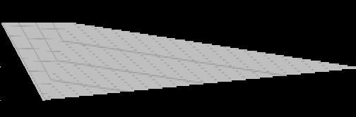

|
Trouble With Texture Mapping
Question submitted by (29 July 1999)

|
 |
|
 |
| |
When I draw a 4 sided polygon with Direct3D using
DrawPrimitive(), the polygon is divided in 2 triangles.
This is a problem because the texture gets messed up
at certain angles (See the JPG included). I use
untransformed/lit vertices (D3DLVERTEX). Using
Triangle Fans instead of Triangle Strips doesn't help.
How can I solve this problem?

|
|
 |
|
 |
 |
|
|
| |
In your image, it looks like you are not using perspective
correction, but I'm not convinced that is the problem we're seeing here.
To verify this, make sure you are sending your polygons to D3D with proper
U/V/W/Z coordinates.
When you say "the texture gets messed up at certain angles" this leads me
to believe that you have a problem with perspective correction. However,
if your polygons are not mapped properly, you can experience problems with
perspective correction even though you are setting the proper U/V/W/Z
coordinates. So make sure your polygons are planar mapped.
For example, if you were to map a square polygon to the full extents of a
square texture, things work fine.
However, if you move one of the vertices of the polygon (as your example
shows) without adjusting your texture, you have lost your planar mapping.
When you no longer have a planar mapping, the primitive rendering engine
(either in D3D's software emulation or on your 3D card) will be unable to
properly render a perspective corrected texture.
Also, depending on how your driver converts n-gons into triangles (via
fans or whatever) the change in angle may modify the order of the
triangles generated. By this, I mean that at some angle the quad may
become two triangles (top-left and lower-right) but at a different angle
it may switch (top-right and lower-left). If this happens and your
polygons are not perfectly planar mapped, then you will notice some
popping in the texture when this change occurs.
Response provided by Paul Nettle
|
|
|
|
|
This article was originally an entry in flipCode's Fountain of Knowledge, an open Question and Answer column that no longer exists.
|